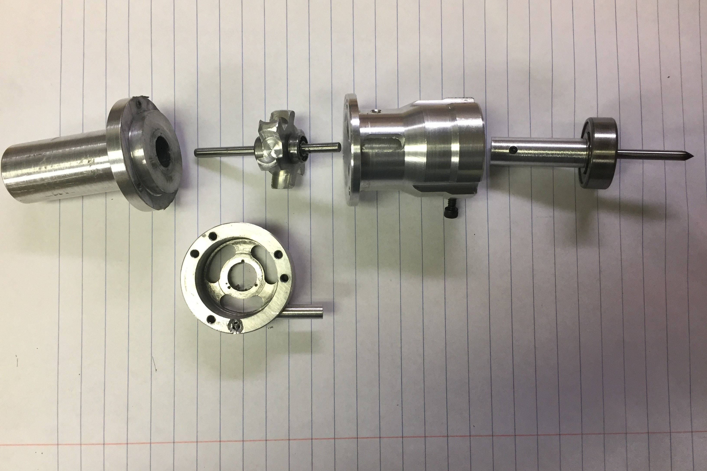
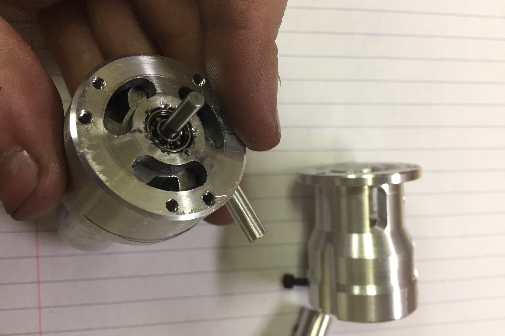

Turbospindle Mk I
Summer 2018
A small air-turbine to drive small tooling.
As part of a series of experiments with engraving, I needed a high-speed spindle to turn tiny engraving bits. An air-turbine seemed like the easiest way to do this, so I built this little device. The finished turbine is a little too small, however, so it's not quite powerful enough, so I intend to make a bigger one someday. I also did not acceptably align the bearings, which led to a lot of problems for a while, until eventually I was forced to cantilever the turbine rotor and just eliminate the problematic bearing entirely. There is still more internal friction than I would like, which is surely part of the lack of power. The RPM is good though, I have no tachometer that can read that high, but it seems like around 150,000 rpm.

The disassembled turbine

The bottom of the turbine chamber, where the air exhausts. The shroud around this part exists mostly just to provide space for the coupling and the second bearing, so the air has to travel through the exhaust shroud and out the sides.